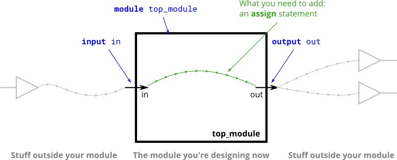

前言
最近开始学习 Verilog 了。刚开始看的时候会觉得它和 C 语言有点像，但写了一些练习后发现，这种像主要停留在语法表面：C 更像是在描述“程序如何一步一步执行”，Verilog 更像是在描述“一张电路如何连接、何时更新”。
这篇文章参考 HDLBits 的 Verilog Language、Combinational Logic 和 Sequential Logic 部分，整理成一份入门语法与示例手册。目的不是记录每一道题怎么解，而是方便以后忘记某个语法时快速翻回来。
基本观念
Verilog 描述的是硬件电路。很多语句看起来像“赋值”，但实际更像“连线”或者“描述一片电路”。
assign out = in;
这不是执行一次赋值，而是表示 out 持续由 in 驱动。只要 in 改变，out 就会跟着改变。
常见的两类电路：
- 组合逻辑：输出只由当前输入决定，例如与门、或门、mux、加法器。
- 时序逻辑：输出会被时钟保存，例如触发器、计数器、状态机。
Verilog 代码里也经常按这两类来写：
assign y = a & b; // 简单组合逻辑
always @(*) begin // 较复杂的组合逻辑
y = a & b;
end
always @(posedge clk) begin // 时序逻辑
q <= d;
end
Module
module 是 Verilog 的基本封装单位，可以理解成一个电路模块的接口和实现。
推荐使用 Verilog-2001 的 ANSI 风格，把端口方向、位宽和名字写在一起：
module top_module(
input a,
input b,
output out
);
assign out = a & b;
endmodule
旧式写法也能见到，但不如 ANSI 风格清楚：
module top_module(a, b, out);
input a;
input b;
output out;
assign out = a & b;
endmodule
注释写法和 C 类似：
// 单行注释
/* 多行注释 */
参数 Parameter 与 Localparam
如果一个模块有些属性希望可配置，例如位宽、深度、初值，就可以用 parameter：
module mux2 #(
parameter WIDTH = 8
)(
input [WIDTH-1:0] a,
input [WIDTH-1:0] b,
input sel,
output [WIDTH-1:0] y
);
assign y = sel ? b : a;
endmodule
例化时可以覆盖参数：
mux2 #(
.WIDTH(12)
) u_mux2 (
.a(a),
.b(b),
.sel(sel),
.y(y)
);
这样同一个模块就可以复用在不同位宽或不同配置下。
如果参数只希望在模块内部当常量使用，不希望被外部例化时改掉，可以用 localparam：
module example;
localparam IDLE = 2'd0;
localparam RUN = 2'd1;
endmodule
两者可以先这样区分：
parameter：模块对外暴露的可配置参数localparam：模块内部使用的只读常量
对入门来说，一个很好记的经验是：
- 位宽、深度、计数上限这类“希望模块可复用”的量，用
parameter - 状态机状态编号、内部固定常量这类“不希望外部乱改”的量，用
localparam
状态机里什么时候用
状态机题里经常会写状态定义：
localparam A = 2'd0;
localparam B = 2'd1;
localparam C = 2'd2;
localparam D = 2'd3;
或者 one-hot 写法：
localparam A = 4'b0001;
localparam B = 4'b0010;
localparam C = 4'b0100;
localparam D = 4'b1000;
这里更推荐用 localparam，原因很简单：这些状态编码通常只是模块内部实现细节，不应该让外部例化时随便改掉。
如果外部真的把状态编码改了，状态转移逻辑、输出逻辑、one-hot 约束可能全都一起失效。
相反，如果你是在写一个“状态位宽可配置”或者“计数终值可配置”的模块，那就更适合用 parameter：
module counter #(
parameter WIDTH = 8,
parameter MAX_VALUE = 8'd255
)(
input clk,
input reset,
output reg [WIDTH-1:0] q
);
always @(posedge clk) begin
if (reset)
q <= {WIDTH{1'b0}};
else if (q == MAX_VALUE)
q <= {WIDTH{1'b0}};
else
q <= q + 1'b1;
end
endmodule
所以状态机里可以先记一个很实用的判断：
- “这是实现细节吗？”如果是，优先
localparam - “这是希望外部能改的配置吗？”如果是，用
parameter
信号类型
Wire
wire 表示连线，常用于组合逻辑连接。input 和 output 如果没有额外说明，默认也是 wire。
module top_module(
input in,
output out
);
wire not_in;
assign not_in = ~in;
assign out = ~not_in;
endmodule
assign 的左边是被驱动的 wire，右边是驱动源。一根 wire 通常只能有一个 driver，但可以连接到多个 sinks。

除了 input 和 output，还有一种端口方向是 inout，表示双向端口。它常见于总线型信号或三态接口：
module top_module(
input ena,
input [3:0] d,
inout [3:0] bus
);
assign bus = ena ? d : 4'bzzzz;
endmodule
不过在 FPGA 设计里，真正的内部三态并不常见，inout 更多用于顶层 I/O 口。
Reg
reg 容易误解。它不一定代表真实寄存器，而是表示这个信号可以在 procedural block 里被赋值。
module top_module(
input a,
input b,
output reg y
);
always @(*) begin
y = a & b;
end
endmodule
上面这个 y 虽然声明为 reg，但因为它在 always @(*) 中完整描述了组合逻辑，所以综合出来是组合电路，不是触发器。
真正会综合出触发器的通常是时钟触发的写法：
always @(posedge clk) begin
q <= d;
end
隐式 Wire
Verilog 默认允许未声明信号自动变成 1 bit wire。拼错名字时这很危险：
wire [2:0] a;
wire [2:0] c;
assign a = 3'b101;
assign b = a; // b 没有声明，可能被自动创建成 1-bit wire
assign c = b; // 结果可能不是预期的 3'b101
建议在文件开头加：
`default_nettype none
这样拼写错误会直接暴露出来。
4 态逻辑：0、1、x、z
Verilog 信号不只有 0 和 1，还有：
x：未知态、不确定态z：高阻态
例如：
assign y = 1'bx;
assign bus = 4'bzzzz;
x 常见于未初始化、冲突驱动、仿真中未知结果；z 常见于三态总线或未被驱动的线。
写可综合逻辑时，z 最常见的地方是顶层三态接口；x 更多是仿真时帮助发现问题，而不是主动拿来当设计状态。
常量
Verilog 常量常用格式：
<位宽>'<进制><数值>
例子：
1'b1 // 1 bit 二进制 1
4'b1010 // 4 bit 二进制
8'hff // 8 bit 十六进制
16'd100 // 16 bit 十进制
32'h0000_ffff // 下划线只用于分隔，提高可读性
如果不给位宽，Verilog 会按默认规则推断，容易在拼接等场景出问题。因此写硬件时尽量显式写位宽。
输出固定值：
module top_module(
output one,
output zero
);
assign one = 1'b1;
assign zero = 1'b0;
endmodule
连续赋值
assign 用于 continuous assignment，也就是连续赋值。它只能写在 always 外面，左边通常是 wire。
assign y = a & b;
assign z = x ? a : b;
适合用 assign 的场景：
- 简单组合逻辑。
- 简单 mux。
- 简单连线、拼接、取位。
- reduction operator 这类短表达式。
不适合用 assign 的场景：
- 分支很多，需要
if或case。 - 要在过程块里先给默认值再覆盖。
- 时钟触发逻辑。
运算符
位运算
位运算会逐 bit 计算，输入是 vector 时输出通常也是同宽 vector。
assign y_not = ~a;
assign y_and = a & b;
assign y_or = a | b;
assign y_xor = a ^ b;
assign y_xnor = ~(a ^ b);
例子：
module top_module(
input [2:0] a,
input [2:0] b,
output [2:0] y
);
assign y = a ^ b;
endmodule
逻辑运算
逻辑运算把整个表达式当作布尔值，输出是 1 bit。
assign y1 = a && b;
assign y2 = a || b;
assign y3 = !a;
位运算和逻辑运算在 1 bit 信号上看起来差不多，但在 vector 上差别很大：
module top_module(
input [2:0] a,
input [2:0] b,
output [2:0] bitwise_or,
output logical_or
);
assign bitwise_or = a | b; // 逐位 OR，输出 3 bit
assign logical_or = a || b; // 非零即真，输出 1 bit
endmodule
Reduction Operator
Reduction operator 只有一个操作数，会把整个 vector 压成 1 bit。
assign all_one = ∈ // 所有 bit AND
assign any_one = |in; // 所有 bit OR
assign parity = ^in; // 所有 bit XOR，常用于奇偶校验
assign nand_all = ~∈
assign nor_all = ~|in;
assign xnor_all = ~^in;
例子：
module top_module(
input [7:0] in,
output parity
);
assign parity = ^in;
endmodule
三目条件运算符
三目运算符常用于简单 mux：
condition ? if_true : if_false
例子：
assign out = sel ? b : a;
多个比较也可以组合起来：
wire [7:0] min_ab;
wire [7:0] min_cd;
assign min_ab = (a < b) ? a : b;
assign min_cd = (c < d) ? c : d;
assign min = (min_ab < min_cd) ? min_ab : min_cd;
分支简单时用三目运算符；分支复杂或层数太多时，用 always @(*) 加 if/case 更清楚。
比较运算符
比较运算符常用于比较器、计数器范围判断、优先级判断：
assign lt = (a < b);
assign le = (a <= b);
assign gt = (a > b);
assign ge = (a >= b);
assign eq = (a == b);
assign neq = (a != b);
比较结果通常是 1 bit。
在大多数可综合场景里，== 和 != 就够用了。===、!== 会把 x/z 也纳入比较，更多见于仿真与 testbench，写综合逻辑时一般少用。
移位运算符
移位运算符在移位寄存器、对齐、乘除 2 的幂时很常见：
assign y1 = a << 1; // 左移
assign y2 = a >> 1; // 逻辑右移
assign y3 = a <<< 1; // 算术左移
assign y4 = a >>> 1; // 算术右移
左移时，逻辑左移和算术左移通常没有区别。差别主要在右移：
>>高位补 0。>>>会复制符号位，常用于有符号数算术右移。
例如：
reg signed [7:0] a;
assign y = a >>> 1;
如果 a 是负数，>>> 会保留符号位。
Vector
Vector 是多 bit 信号，也就是一组线。
wire [7:0] w; // 8 bit wire
reg [4:1] x; // 4 bit reg
input wire [3:0] in; // 4 bit input
output [3:0] out; // 4 bit output，默认 wire
声明格式：
type [upper:lower] name;
常见写法是 [N-1:0]：
wire [3:0] a; // a[3] 是高位，a[0] 是低位
也可以写 [0:3]，但后续 part-select 必须保持同样方向。为了少踩坑，入门时统一使用 [N-1:0] 就好。
取位与取段
取单 bit：
assign bit0 = in[0];
assign bit7 = in[7];
取一段：
assign high = in[15:8];
assign low = in[7:0];
Part-select 可以在赋值右边，也可以在赋值左边：
assign out[31:24] = in[7:0];
assign out[23:16] = in[15:8];
assign out[15:8] = in[23:16];
assign out[7:0] = in[31:24];
如果要反转 bit 顺序，不能写 in[0:7] 来倒序选择；应使用拼接或循环。
Indexed Part-Select
当起始位置需要用变量表达时，可以用 indexed part-select：
wire [399:0] data;
wire [3:0] digit0;
wire [3:0] digit1;
assign digit0 = data[0 +: 4]; // data[3:0]
assign digit1 = data[4 +: 4]; // data[7:4]
base +: width 表示从 base 开始向高位取 width bit。还有 base -: width，表示从 base 开始向低位取。
assign byte0 = data[0 +: 8]; // data[7:0]
assign byte3 = data[31 -: 8]; // data[31:24]
拼接
拼接运算符 {} 可以把多个信号拼成更宽的 vector：
assign out = {a, b, c};
例子：
{3'b111, 3'b000} // 6'b111000
{1'b1, 1'b0, 3'b101} // 5'b10101
{4'ha, 4'd10} // 8'b10101010
拼接中的常量必须有明确位宽，{1, 2, 3} 这种写法不推荐，也可能非法。
字节序反转：
assign out = {in[7:0], in[15:8], in[23:16], in[31:24]};
bit 反转：
assign out = {in[0], in[1], in[2], in[3], in[4], in[5], in[6], in[7]};
重复拼接
重复拼接格式：
{重复次数{被重复的表达式}}
例子：
{5{1'b1}} // 5'b11111
{2{a, b, c}} // {a, b, c, a, b, c}
符号扩展：
module top_module(
input [7:0] in,
output [31:0] out
);
assign out = {{24{in[7]}}, in};
endmodule
如果 in[7] 为 0，前面补 0；如果 in[7] 为 1，前面补 1。
Procedure: Always
Procedure 是过程块。可综合代码里最常见的是 always。它可以描述组合逻辑，也可以描述时序逻辑。
组合 Always
组合逻辑用：
always @(*) begin
// blocking assignment
end
例子：
module top_module(
input a,
input b,
output reg y
);
always @(*) begin
y = a & b;
end
endmodule
组合 always 的注意点：
- 左边被赋值的信号声明为
reg。 - 使用阻塞赋值
=。 - 所有输出在所有条件下都要有确定值。
- 如果漏赋值，可能会意外综合出 latch。
常用写法是先给默认值，再按条件覆盖：
always @(*) begin
y = 1'b0;
if (enable)
y = data;
end
时序 Always
时序逻辑用：
always @(posedge clk) begin
// non-blocking assignment
end
例子：
module top_module(
input clk,
input d,
output reg q
);
always @(posedge clk) begin
q <= d;
end
endmodule
q 只在时钟上升沿更新。平时 d 改变，q 不会立刻变化。
时序逻辑常常还会带 reset、enable、load 等控制信号。写法上通常就是在同一个时钟块里按优先级展开：
always @(posedge clk) begin
if (reset)
q <= 8'd0;
else if (load)
q <= data;
else if (ena)
q <= q_next;
end
这段代码的优先级是 reset > load > ena。很多计数器、移位寄存器、状态寄存器都是这个套路。
同步复位与异步复位
同步复位只在时钟边沿生效：
always @(posedge clk) begin
if (reset)
q <= 1'b0;
else
q <= d;
end
异步复位不需要等时钟边沿：
always @(posedge clk or posedge areset) begin
if (areset)
q <= 1'b0;
else
q <= d;
end
两者的语法区别主要体现在敏感列表里：
- 同步复位：只写时钟。
- 异步复位：时钟和复位都写进敏感列表。
HDLBits 的时序题里这两种都会反复出现。
Latch、Flip-Flop 与组合逻辑
三种常见写法可以顺手对比一下：
组合逻辑：
always @(*) begin
q = d;
end
电平敏感锁存器：
always @(*) begin
if (ena)
q = d;
end
边沿触发 D 触发器：
always @(posedge clk) begin
q <= d;
end
这三者的差别不在于“长得像不像赋值”，而在于：
always @(*)且完整赋值：组合逻辑。always @(*)且某些条件下保持原值：latch。always @(posedge clk)：flip-flop。
阻塞与非阻塞赋值
三种赋值的使用位置：
assign x = y; // continuous assignment，只能在 always 外面
x = y; // blocking assignment，用在 always 里面
x <= y; // non-blocking assignment，用在 always 里面
经验规则：
- 组合
always @(*)用=。 - 时序
always @(posedge clk)用<=。 assign写在always外面。
= 更像按过程块中的语句顺序计算中间结果；<= 更像所有触发器在同一个时钟边沿同时更新。
“阻塞”和“非阻塞”这两个名字，可以这样理解：
- 阻塞赋值
=：当前语句执行完，后面的语句才能看到新值。 - 非阻塞赋值
<=：先把右值记下来，等这个always块结束后统一更新左值。
在组合逻辑里，阻塞赋值通常更自然，因为我们常常需要先算中间量，再用中间量继续往下算：
always @(*) begin
tmp = a & b;
y = tmp | c;
end
这段代码里，y 看到的是本次过程块里刚算出来的 tmp。
而在时序逻辑里，非阻塞赋值更符合真实触发器“同一个时钟边沿同时更新”的行为。下面这个例子最能看出差别：
always @(posedge clk) begin
q1 <= d;
q2 <= q1;
q3 <= q2;
end
这表示 3 级寄存器链：
- 这个时钟边沿，
q1取d的旧值。 q2取q1的旧值。q3取q2的旧值。
也就是说，数据会一级一级往后传，每拍前进一格。
如果把上面错误地写成阻塞赋值：
always @(posedge clk) begin
q1 = d;
q2 = q1;
q3 = q2;
end
从仿真语义上看，后面的语句会立刻看到前面更新后的值，于是 q2 会直接拿到新的 q1，q3 也会直接拿到新的 q2。这样行为就更像是“值在一个过程块里顺着语句流下去”，而不是“三级触发器同时在时钟边沿采样旧值”。
所以入门阶段可以先记一个非常实用的判断：
- 你想描述“组合计算过程”，优先用
=。 - 你想描述“寄存器在时钟边沿更新”，优先用
<=。
虽然某些情况下混用也能综合，但会让仿真语义和读代码的人都很困惑，入门阶段尽量不要混。
If 与 Case
If
if 在组合逻辑中通常综合成 mux。
always @(*) begin
if (sel)
out = b;
else
out = a;
end
也可以先默认后覆盖：
always @(*) begin
out = a;
if (sel)
out = b;
end
避免这种漏赋值：
always @(*) begin
if (sel)
out = b; // sel 为 0 时 out 没有被赋值，可能推导 latch
end
Case
case 适合多路选择。
always @(*) begin
case (sel)
2'd0: out = data0;
2'd1: out = data1;
2'd2: out = data2;
2'd3: out = data3;
default: out = 1'b0;
endcase
end
与 C 的 switch 相比：
- 不需要
switch关键字。 - 每个分支用
:。 - 不需要
break。 - 多条语句要用
begin ... end。 - 组合逻辑里建议写
default，或者在case前先给默认值。
Casez
casez 会把 z 或 ? 当成 don’t-care。它常用于优先编码器。
always @(*) begin
casez (in)
8'b???????1: pos = 3'd0;
8'b??????10: pos = 3'd1;
8'b?????100: pos = 3'd2;
8'b????1000: pos = 3'd3;
8'b???10000: pos = 3'd4;
8'b??100000: pos = 3'd5;
8'b?1000000: pos = 3'd6;
8'b10000000: pos = 3'd7;
default: pos = 3'd0;
endcase
end
casex 会把 x 和 z 都当作 don’t-care。入门阶段尽量少用 casex，因为 x 可能代表未知值，把未知也忽略会让问题更难调试。
模块层次
大电路通常由小模块组成。一个 module 可以在另一个 module 中被例化。
module sub_module(
input a,
input b,
output y
);
assign y = a & b;
endmodule
module top_module(
input in1,
input in2,
output out
);
sub_module u_sub(
.a(in1),
.b(in2),
.y(out)
);
endmodule
例化语句格式：
module_type instance_name (port_connections);
module_type 是模块类型，instance_name 是实例名。同一个模块类型可以例化很多次，但实例名必须唯一。
端口连接方式
按名字连接，推荐：
mod_a u_mod_a(
.in1(a),
.in2(b),
.out(y)
);
前面带点的是子模块端口名，括号里的是当前模块中的信号名。
按位置连接：
mod_a u_mod_a(a, b, y);
按位置连接更短，但依赖模块端口顺序。端口多时不易检查，入门阶段更推荐按名字连接。
模块之间的连线
子模块之间传递信号时，用内部 wire 连接。
module top_module(
input clk,
input d,
output q
);
wire q1;
wire q2;
my_dff u_dff0(.clk(clk), .d(d), .q(q1));
my_dff u_dff1(.clk(clk), .d(q1), .q(q2));
my_dff u_dff2(.clk(clk), .d(q2), .q(q));
endmodule
这里例化出来的是三个同时存在的触发器，不是“调用三次函数”。
例子：32 bit 加法器
用两个 16 bit 加法器搭 32 bit 加法器：
module top_module(
input [31:0] a,
input [31:0] b,
output [31:0] sum
);
wire carry;
wire cout_unused;
add16 u_add_low(
.a(a[15:0]),
.b(b[15:0]),
.cin(1'b0),
.sum(sum[15:0]),
.cout(carry)
);
add16 u_add_high(
.a(a[31:16]),
.b(b[31:16]),
.cin(carry),
.sum(sum[31:16]),
.cout(cout_unused)
);
endmodule
模块层次的核心是：把已经验证过的小模块组合成更大的模块。
For 与 Generate
Verilog 里有两种容易混淆的“循环”：procedure 里的 for，以及结构生成用的 generate for。
Always 里的 For
always 里的 for 用于描述重复的行为或赋值，循环变量通常是 integer。
例子：反转 100 bit vector。
module top_module(
input [99:0] in,
output reg [99:0] out
);
integer i;
always @(*) begin
for (i = 0; i < 100; i = i + 1) begin
out[i] = in[99 - i];
end
end
endmodule
综合后不是一个硬件运行时循环，而是展开成 100 条并行连接。
例子：统计 1 的个数。
module top_module(
input [254:0] in,
output reg [7:0] count
);
integer i;
always @(*) begin
count = 8'd0;
for (i = 0; i < 255; i = i + 1) begin
count = count + in[i];
end
end
endmodule
注意先给 count 初值，否则可能依赖旧值。
Generate For
generate 用于在 elaboration 阶段生成硬件结构，循环变量是 genvar。
genvar i;
generate
for (i = 0; i < 100; i = i + 1) begin : gen_block
full_adder u_fadd(
.a(a[i]),
.b(b[i]),
.cin(carry[i]),
.sum(sum[i]),
.cout(carry[i+1])
);
end
endgenerate
它适合批量例化模块、批量声明局部结构、按参数选择生成不同硬件。
例子：100 bit ripple-carry adder。
module top_module(
input [99:0] a,
input [99:0] b,
input cin,
output [99:0] cout,
output [99:0] sum
);
genvar i;
generate
for (i = 0; i < 100; i = i + 1) begin : gen_add
if (i == 0) begin
full_adder u_fadd(
.a(a[i]),
.b(b[i]),
.cin(cin),
.sum(sum[i]),
.cout(cout[i])
);
end
else begin
full_adder u_fadd(
.a(a[i]),
.b(b[i]),
.cin(cout[i-1]),
.sum(sum[i]),
.cout(cout[i])
);
end
end
endgenerate
endmodule
gen_add[0].u_fadd 到 gen_add[99].u_fadd 会展开成 100 个实例。
Always 与 Generate 怎么选
这部分单独列出来，因为很容易混：
- 要描述输入变化后输出怎么算：用
assign或always @(*)。 - 要描述时钟边沿保存数据：用
always @(posedge clk)。 - 要批量给 vector 的各位赋值：用
always @(*)里的for。 - 要批量例化 module：用
generate for。 - 要根据参数决定是否生成某段硬件：用
generate if。
一个简单判断：
// 只是在算信号，用 always
always @(*) begin
for (i = 0; i < 100; i = i + 1)
out[i] = in[99 - i];
end
// 要创建很多个模块实例，用 generate
generate
for (i = 0; i < 100; i = i + 1) begin : gen_add
full_adder u_fadd(
.a(a[i]),
.b(b[i]),
.cin(carry[i]),
.sum(sum[i]),
.cout(carry[i+1])
);
end
endgenerate
always 是行为描述，会在仿真中由敏感列表触发；generate 是结构生成，不会在运行时触发，它只是在综合前把代码展开成具体硬件结构。
仿真与 Testbench
前面写的基本都是“要综合成电路”的代码。Verilog 里还有一类很常用的写法，是给仿真和测试文件用的，也就是 testbench。
testbench 的目标不是综合成电路，而是：
- 例化被测模块。
- 生成输入激励。
- 观察输出是否符合预期。
Testbench 基本结构
一个最简单的 testbench 往往没有输入输出端口：
module tb;
reg a;
reg b;
wire y;
top_module dut(
.a(a),
.b(b),
.y(y)
);
endmodule
在 testbench 里，一般有个顺手的经验：
- 被测模块的输入，在 testbench 里声明成
reg - 被测模块的输出，在 testbench 里声明成
wire
因为 testbench 要主动给输入赋值，而输出通常由 DUT 自动驱动。
Initial
initial 常用于给仿真构造激励。它在仿真开始时执行一次：
initial begin
a = 1'b0;
b = 1'b0;
#10 a = 1'b1;
#10 b = 1'b1;
end
一个 initial 块内部语句按顺序执行；多个 initial 块之间是并发执行的。
延时语句
# 用于描述仿真时间延迟：
#10 a = 1'b1;
它的意思是“延迟 10 个仿真时间单位后再执行后面的语句”。这在 testbench 里很常用，但它不是综合语法，不能拿来描述真实硬件延时电路。
Forever 与时钟产生
testbench 里常常需要自己造一个时钟：
reg clk;
initial begin
clk = 1'b0;
forever #5 clk = ~clk;
end
这表示每 5 个时间单位翻转一次 clk，于是得到周期为 10 的方波。
Display
$display 用来在仿真时打印信息：
initial begin
a = 1'b0;
b = 1'b1;
#1 $display("a=%b b=%b y=%b", a, b, y);
end
当你写自检 testbench 时，它很适合在结果不符合预期时打印错误信息。
自检测试
testbench 不一定只看波形，也可以自己判断对错：
initial begin
a = 1'b0; b = 1'b0; #1;
if (y != 1'b0)
$display("ERROR: a=0 b=0 y=%b", y);
a = 1'b1; b = 1'b1; #1;
if (y != 1'b1)
$display("ERROR: a=1 b=1 y=%b", y);
end
这种 testbench 比单纯盯波形更高效，尤其在测试向量很多的时候。
Readmemb 与测试向量
如果测试数据很多，可以从文件里读测试向量，而不是手写一大串赋值。
reg [3:0] vectors [0:15];
initial begin
$readmemb("example.tv", vectors);
end
$readmemb 表示按二进制文本读入，常用于把测试向量文件加载进数组。类似地还有 $readmemh，按十六进制文本读入。
这类方式适合：
- 枚举很多输入组合
- 批量对比期望输出
- 存放 ROM 初值或测试数据
哪些更偏仿真专用
入门时可以先把下面这些归到“testbench 常用、一般不综合”：
initial#延时forever$display$readmemb/$readmemh
而 always、assign、case、if、parameter 这些既能在设计代码里出现，也可能在 testbench 里出现。
从电路题补充的常用写法
前面的章节偏语法本身。做完 Combinational Logic 和 Sequential Logic 后，又会反复遇到一些“不是新语法，但非常常用”的写法，可以顺手记在这里。
边沿检测
边沿检测的核心是“把上一拍的值存下来，再和当前值比较”：
module top_module(
input clk,
input in,
output reg pedge
);
reg in_last;
always @(posedge clk) begin
pedge <= ~in_last & in;
in_last <= in;
end
endmodule
上升沿检测：
- 上一拍是 0。
- 这一拍是 1。
也就是 ~in_last & in。
双边沿检测：
edge <= in ^ in_last;
边沿捕获寄存器则是在检测到边沿后把结果“记住”，直到 reset：
out <= out | (in_last & ~in);
计数器模板
最常见的计数器模板：
always @(posedge clk) begin
if (reset)
q <= 4'd0;
else
q <= q + 1'b1;
end
带模值限制的计数器：
always @(posedge clk) begin
if (reset)
q <= 4'd0;
else if (q == 4'd9)
q <= 4'd0;
else
q <= q + 1'b1;
end
很多十进制计数器、时钟题，本质上都是“普通计数器 + 到终点回零 + 可能再带使能信号”。
移位寄存器模板
右移：
always @(posedge clk) begin
if (reset)
q <= 4'd0;
else if (ena)
q <= {1'b0, q[3:1]};
end
左移：
q <= {q[2:0], serial_in};
并行装载 + 移位常常写成优先级结构：
always @(posedge clk or posedge areset) begin
if (areset)
q <= 4'd0;
else if (load)
q <= data;
else if (ena)
q <= {q[2:0], serial_in};
end
循环移位和算术移位也只是“移位时补什么 bit”不同。
状态机常用结构
状态机代码常见分成两块或三块：
- 状态寄存器。
- next-state 组合逻辑。
- 输出逻辑。
二段式写法很常见：
localparam A = 2'd0;
localparam B = 2'd1;
localparam C = 2'd2;
reg [1:0] state, next_state;
always @(posedge clk or posedge areset) begin
if (areset)
state <= A;
else
state <= next_state;
end
always @(*) begin
case (state)
A: next_state = in ? B : A;
B: next_state = in ? B : C;
C: next_state = in ? A : C;
default: next_state = A;
endcase
end
如果输出只依赖状态，就是 Moore 型；如果输出依赖状态和输入，就是 Mealy 型。
这里状态常量通常用 localparam，因为它们只是模块内部的状态编码，不应该作为对外配置接口暴露出去。
热独码 One-Hot
One-hot 编码就是“有多少个状态，就用多少 bit；任意时刻只有一位为 1”。
例如 4 个状态：
localparam A = 4'b0001;
localparam B = 4'b0010;
localparam C = 4'b0100;
localparam D = 4'b1000;
优点：
- next-state 逻辑常常更直观。
- 某些 FPGA 场景里实现方便。
缺点：
- 更占寄存器位数。
从 HDLBits 的 one-hot 题型来看，一个很实用的思路是：直接按“某状态有哪些入边”去写下一状态逻辑，而不是先把 one-hot 状态重新解码成普通编号。
常见模板
简单组合逻辑
module top_module(
input a,
input b,
output y
);
assign y = a & b;
endmodule
复杂组合逻辑
module top_module(
input [1:0] sel,
input [7:0] a,
input [7:0] b,
input [7:0] c,
output reg [7:0] y
);
always @(*) begin
y = 8'd0;
case (sel)
2'd0: y = a;
2'd1: y = b;
2'd2: y = c;
default: y = 8'd0;
endcase
end
endmodule
D 触发器
module top_module(
input clk,
input d,
output reg q
);
always @(posedge clk) begin
q <= d;
end
endmodule
加减法器
减法 a - b 可以写成 a + ~b + 1。
module top_module(
input [31:0] a,
input [31:0] b,
input sub,
output [31:0] sum
);
wire [31:0] b_xor;
assign b_xor = b ^ {32{sub}};
assign sum = a + b_xor + sub;
endmodule
如果 sub = 0，就是 a + b；如果 sub = 1，就是 a + ~b + 1。
易错点速查
assign只能写在always外面。always里被赋值的信号要声明为reg。reg不一定综合成寄存器，是否是寄存器取决于写法。- 组合
always @(*)用=，时序always @(posedge clk)用<=。 - 时序逻辑里如果把寄存器链写成
=，仿真行为常常会和预期触发器链不一致。 - 组合逻辑要覆盖所有条件，否则可能推导 latch。
- Vector 常用
[N-1:0]，不要混用[0:N-1]。 a | b是逐位 OR，a || b是逻辑 OR。&in是 reduction AND，不是取地址。- 拼接
{}里的常量最好显式写位宽。 - 批量赋值用
for，批量例化模块用generate for。 - 例化模块时推荐按名字连接端口。
initial、#、forever、$display、$readmemb更偏 testbench 仿真语法，不是日常 RTL 综合主力。- 建议使用
`default_nettype none禁止隐式 wire。
小结
这篇先整理到 Verilog 入门中最常见的语法：module、wire/reg、assign、运算符、vector、always、if/case、模块例化、for/generate。后面继续学组合逻辑、时序逻辑和状态机时，这些语法基本都会反复出现。
最需要记住的一句话就是是：Verilog 不是在写程序执行流程，而是在描述硬件结构与信号更新规则。
参考资料
- HDLBits
- HDLBits: Getting Started
- HDLBits: Problem sets
- HDLBits: Modules
- HDLBits: Always blocks (combinational)
- HDLBits: Always blocks (clocked)
- HDLBits: Avoiding latches
- HDLBits: Reduction operators
- HDLBits: Generate for-loop: 100-bit binary adder 2